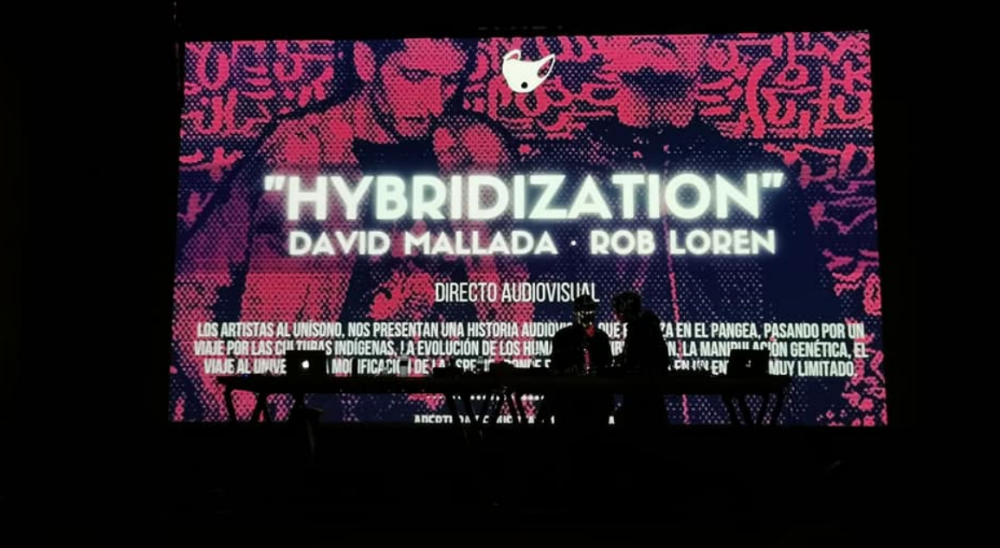
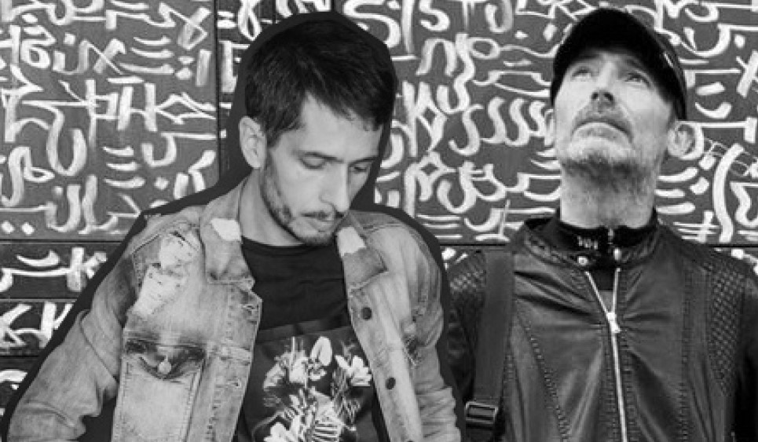

Hybridization
Somos un equipo que siempre busca lo mejor
¿En que se basa el proyecto?
Imagina que vas al teatro.... Se apagan las luces y los murmullos de los asistentes son acallados por el envolvente sonido de una canción misteriosa que anuncia una propuesta. La pantalla del teatro se ilumina y un deslumbrante destello de luz se fuga por el gran escenario. En menos de dos segundos, y al ritmo de la música de acción, el teatro se trasforma en una montaña, con un río que inunda la pantalla y de donde renace la diosa madre. Tras ella una tormenta, una historia audiovisual que empieza en el Pangea, luego un viaje por las culturas indígenas, más adelante los humanos y la hibridación, la manipulación genética, el viaje al universo, la modificación de la especie, donde el individuo se aísla en un entorno muy limitado. Se apaga la luz y se regresa la iluminación del lugar, y termina la sesión, como si todo aquello no hubiera sido más que una ilusión.
¿Quién forma el equipo?
David Mallada
Productor musical y Dj de reconocido prestigio. Tras varios años por la geografía Asturiana es fichado por la reconocida agencia Peacock la cual le ayuda a llevar su música por el panorama nacional llegando a grandes salas o festivales e incluyendo algunas visitas a Inglaterra. Los años y el amor por la música hacen que sus sets sorprendan por no dejar de lado ninguna rama de la música electrónica. Actualmente dirige “NOT PLAY RECORDS” , sello de música Techno que con tan solo sus cinco primeras referencias se ha colocado en las listas de ventas y y se hace indispensable en cualquier pista de techno.
Rob Loren
Roberto Lorenzo aka Rob Loren es un artista audiovisual graduado en diseño gráfico que trabaja desde su plataforma AV.Studio principalmente en proyectos Audiovisuales. Saliendo entre los mejores Vjs del mundo en Dj Mag revista especializada del sector y recibiendo varios premios en Jornadas Motiva, o el Festival Óptica entre otros. Director artístico del Festival Visiónica y otros eventos similares. Sin duda, es una referencia en nuestro entorno, para aquellos que quieren seguir por este camino.
RIDER TÉCNICO
Casi todos los teatros disponen del equipo suficiente para hacer el espectáculo.
- 2 CDJ 2000 NEXUS O CDJ 2000 NEXUS I I
- 1 X PIOONER 900 NEXUS O 1 X AL LEN & HEAT XONE 92
- 2 X 1000WT BOOTH
- 1 DVJ 1000
- PROYECTOR DE VIDEO
- INSTALACIÓ
- TÉCNICO
Extras
- RUEDA DE PRENSA
- ENTREVISTA
- CARTELERIA Y PUBLICIDAD